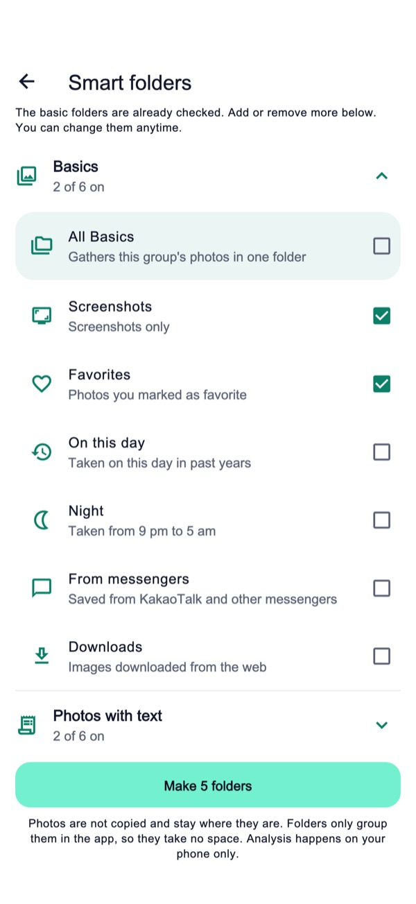
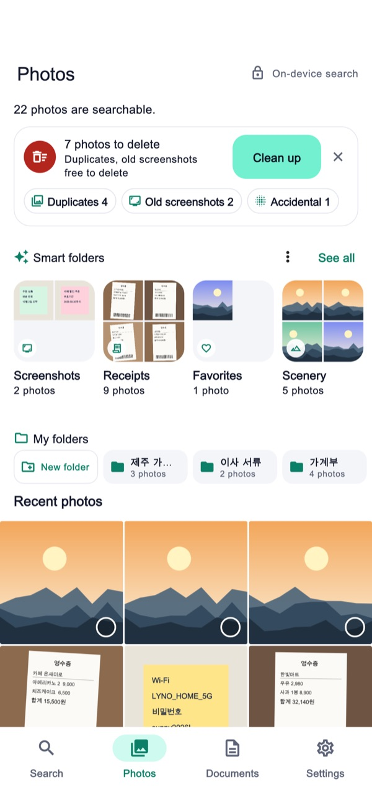

What's new
1. One folder for a whole group · Group folders
In "Choose folders", open a group and turn on its first row, like "All Hobbies & sports". The photos of every folder in that group gather in one folder, each photo once.

2. Search by folder name
Type the name of a smart folder you turned on, and that folder's photos come along below the results. Type two or three with spaces to see only photos in all of them.
Examples: dog beach sunset
3. 38 smart folders
Turn them on in Photos → Turn on smart folders (or Choose folders). New in this version: Sunsets, Night views, Hiking, Fishing, Diving & underwater, Climbing, Motorcycles, Music, Aquariums, Seafood, BBQ, Birthdays, Coffee & cups, Books, Bags, Shoes, Scenery

4. Search from the Lock Screen · Lock Screen widgets
iPhone · SiriTouch and hold the Lock Screen, tap Customize, then tap the space under the clock and choose LYNO Find. There is a search circle, a wide search box and a voice search circle. Tap the date to put one line beside it. A tap opens search; the voice circle listens right away.
5. Find in a second · Shortcuts
iPhone · SiriPress and hold the app icon for "Search" and "Voice search". You can also tell Siri "Search in LYNO Find" and answer when Siri asks what to find.
AndroidPress and hold the app icon for "Search" and "Voice search". Swipe down from the top, edit Quick Settings (the pencil) and add "LYNO Find search" to open it from anywhere.
6. Search from your home screen · Widget
iPhone · SiriTouch and hold an empty spot on the home screen, tap Edit at the top left, then Add Widget and pick LYNO Find, small or wide. Tap the widget to search, or the mic to search by voice. It also fits on the Lock Screen.
AndroidTouch and hold an empty spot on the home screen, open Widgets and place LYNO Find; stretch it sideways for the wide look. Tap the widget to search, or the mic to search by voice.